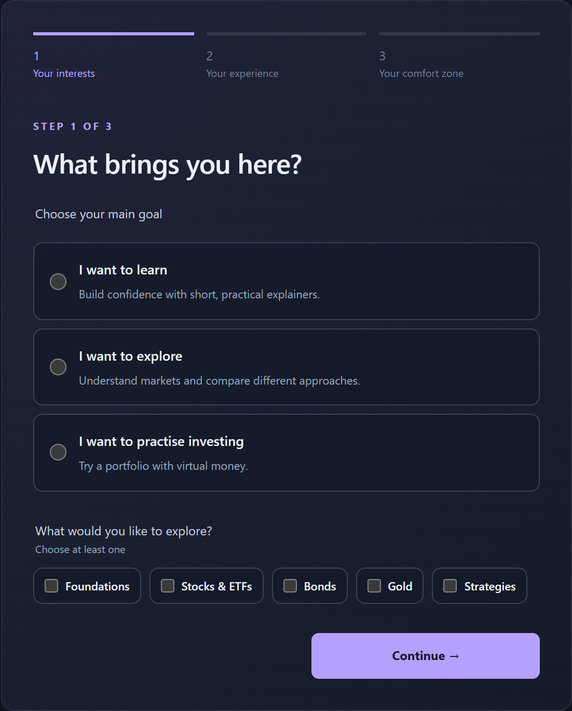
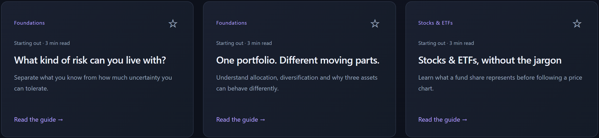
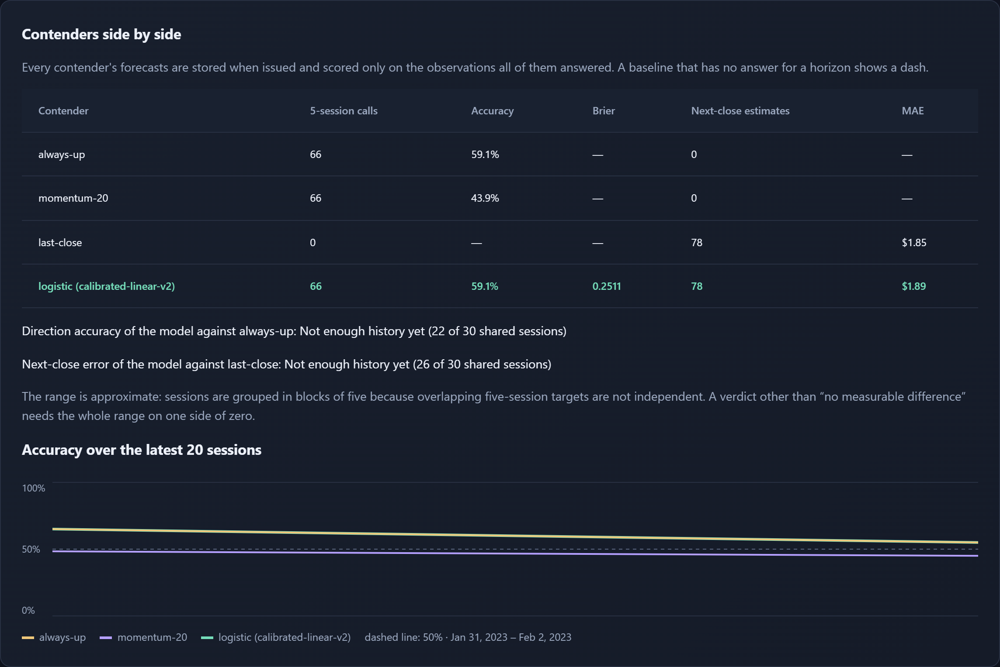

Practise investing without the risk. Learn which forecasts to trust.
MarketLens is a free learning space for beginners: short guides, a virtual portfolio on real market prices, and forecasts that are checked against what actually happened.
Free, no account Virtual money only Works offline


Everything a beginner needs, in one place
Learn the idea, try it with virtual money, and see honestly how forecasts work out.
Three questions, a path that fits you
Tell MarketLens what you want, how much you know and how much risk you are comfortable with. Your starting page then puts the right guides and examples first.

Nine short guides, no jargon
From risk and diversification to bonds, gold and buy-and-hold. Search them, save them for later and mark them as done.
- Every guide links its public source
- Your progress stays in your browser

A portfolio on real prices, no real risk
Pick a Conservative, Balanced or Growth mix of US stocks, Treasury bonds and gold and choose any amount from $100 to $1,000,000. Follow it on today's free quotes, or step through years of real trading days, one day at a time.
See how often a forecast was right before you believe it
Each market gets a five-day Up or Down call and a next-day price estimate. Next to the call you see how often earlier calls like it were right, and every call stays on record, the wrong ones too.
How it works
Three steps, about five minutes, entirely on your own computer.
- 1
Choose your goal
Learn, explore or practise. MarketLens shapes the starting page around your answers.
- 2
Apply a mix
Pick a profile and a virtual amount. The app buys the holdings at real prices.
- 3
Watch and compare
Move through real market days, see your portfolio change and check every forecast against the outcome.
The honest part
MarketLens checks its own forecasting model too, against the simplest guess there is: “the market goes up.” Over almost four years of real prices, the model was no better at it.
The app shows you that openly, because a forecast is worth nothing until it has a record against the simplest guess.

Try it in five minutes
You need Python 3.13. Copy these lines into a terminal, then open http://127.0.0.1:8080.
View the code on GitHub# get it
git clone https://github.com/esst-prog2/MarketLens.git
cd MarketLens
# install once
python -m venv .venv
.venv\Scripts\python -m pip install -r requirements.txt
# run
.venv\Scripts\python app.py
# macOS or Linux: .venv/bin/python instead of .venv\Scripts\python